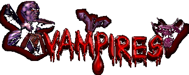
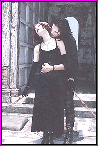

"The vampire may be an escape
~ an escape of all the limitations of human reality. In our own minds,
we can make the vampire whatever we wish it to be...." - Martin V. Riccardo,
Liquid Dreams of Vampires
 Cat@theshadowlands.net
Cat@theshadowlands.net
Cat@theshadowlands.net
Added 9-1-01
by
aurora_vlad_perkins@hotmail.com

Vampire Links
New
Jersey Assoc of Real Vampires
Vampirism
Research Institute
VampireGuild
The
Vampire's Vault
The
Vampire's Lair of Shadows
Fanglady's
Vampyre Castle
Immortal
Society
Back
to the Mysteries and Unknown
Back
to The Shadowlands